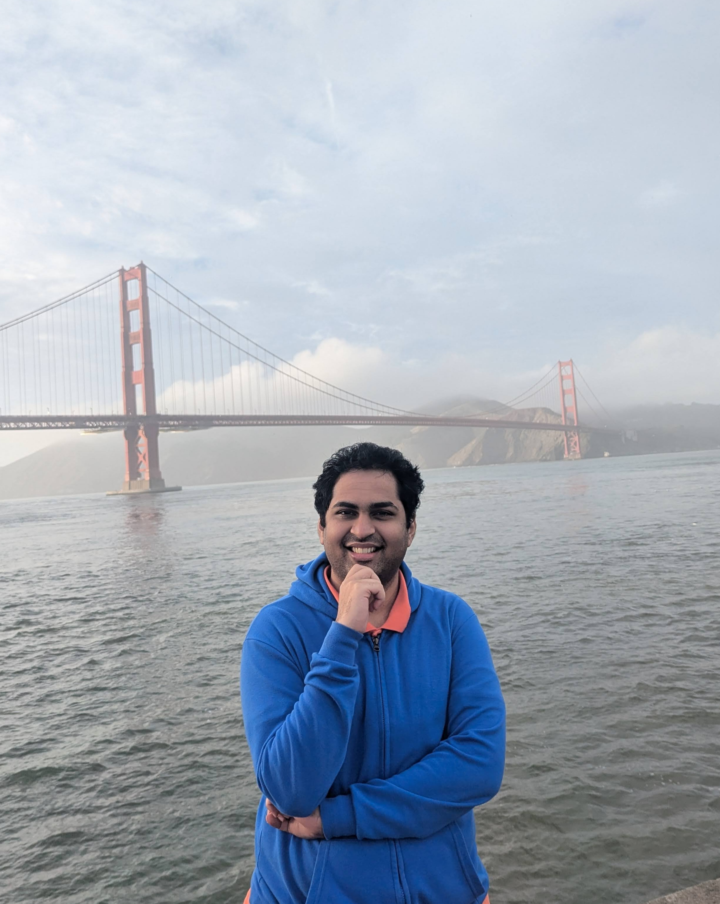

The Master Key Hypothesis: Unlocking Cross-Model Capability Transfer via Linear Subspace Alignment
Rishab Balasubramanian, Pin-Jie Lin, Rituraj Sharma, Anjie Fang, Fardin Abdi, Viktor Rozgic, Zheng Du, Mohit Bansal, Tu Vu
Rishab
Balasubramanian
I am a third year PhD student at Virginia Tech, advised by Tu Vu. My research interests are Language Modeling, Efficiency, Generalization, and Post-Training Alignment. Previously, I worked with Huazheng Wang on adversarial attacks on bandit algorithms and the impact of ordering in recommendation systems. Long long ago, I completed my Bachelor's (B.Tech) from the National Institute of Technology Tiruchirapalli (NIT-Trichy), India, where I was a part of RMI, the robotics club.
Explore my research
Research Interests
-
Language Modeling
How language models learn, reason, and generate text.
-
Efficiency
Ways to reduce the compute and memory costs of language models.
-
Generalization
How models perform on tasks and data beyond their training distribution.
-
Post-Training Alignment
Post-training methods that align language models with human goals and preferences.
02 /
Recent News
- [10/01/2026]One paper accepted to NeurIPS 2026 as Spotlight!
- [05/18/2026]Started my internship at Amazon AGI
- [05/05/2026]New paper on generalization and transferability in language models
- [02/14/2026]New paper on recursive agents
- [05/20/2025]One paper accepted to EMNLP 2025.
- [09/12/2024]One paper accepted to TMLR.
- [25/08/2024]Started PhD at Virginia Tech.
- [01/05/2024]One paper accepted to ICML 2024.
- [09/26/2023]One paper accepted to NeurIPS 2024.
03 /
Research Work
Efficient Model Development through Fine-tuning Transfer
Pin-Jie Lin, Rishab Balasubramanian, Fengyuan Liu, Nikhil Kandpal, Tu Vu
Adversarial Attacks on Combinatorial Multi-Armed Bandits
Rishab Balasubramanian, Jiawei Li, Prasad Tadepalli, Huazheng Wang, Qingyun Wu, Haoyu Zhao
[paper]
Adversarial Attacks on Online Learning to Rank with Stochastic Click Models
Zichen Wang, Rishab Balasubramanian, Hui Yuan, Chenyu Song, Mengdi Wang, Huazheng Wang
[arXiv]
[paper]
04 /
Other Projects
3D reconstruction from endoscopic images
Rishab Balasubramanian, EndovisionAi
[page]
Contrastive Learning for Out-of-Distribution Object Detection
Rishab Balasubramanian, Rupashree Dey, Kunal Rathore
[arXiv]
[code]
Autonomous Mapping and Safe Footfall Planning for Hexapods
Rishab Balasubramanian, Sun Ge, Guillaume Sartoretti
Autonomous control of a legged robot to map a room using the RTABMap framework.
[page]
[code]
Formation Control and Collision Avoidance for Multi-Agent Systems
Rishab Balasubramanian, Prof. M Umapathy
Multi-agent collision avoidance using the ORCA algorithm, compared with other algorithms.
[page]
[thesis]